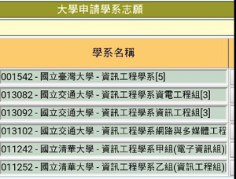
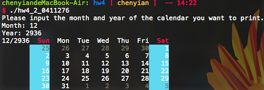
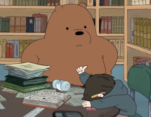

交大資工轉系紀錄
從今以後，我應該可以全然地為自己的人生做決定、負責了吧。
The brick walls are there for a reason.
The brick walls are not there to keep us out.
The brick walls are there to give us a chance to show how badly we want something.
Because the brick walls are there to stop the people who don’t want it badly enough. They’re there to stop the other people.
-- Randy Pausch, The Last Lecture

我的大學申請志願序。畢竟都叫志願表，不照志願填又有什麼意思呢？
指定科目考試
從離開考場的剎那間就知道考差了。
我感到不知所措，但卻又有股澎湃陣陣衝上胸口。
結束了，離開高中代表已經脫離最險惡的應試人生，我再也不想逼自己強吞用不到的知識，再也不想每天晚上悲苦的走到自習室，拿起沒興趣的書本猛k，假裝為自己的人生負責。
去你的台灣教育，離開了你，我的人生才剛開始。
那段日子裏，心情總帶了點灰暗，矛盾的念頭不停在心中打轉。我自認為人生才剛開始，但怎麼好像從一起步就落後了。在內心確認不重考後，我選擇直接進入大學，讓自己直接跳脫充滿升學主義的高中教育，好好過活。
告別高中
畢業典禮是在指考前，那天，指考生們匆忙回到學校，急忙領畢業證書拍拍照就回去準備考試。還記得典禮當天某班的老師鬧脾氣搞失蹤... 記不清楚了，只是回想起來還是會不自覺地發笑。
直到考完試之後我才能好好的跟中一中道別。
升大一的暑假，回吉他社辦了場幹部訓練，在認識學弟的同時也回味回味熟悉朋友們。
參加吉他社最初只是想要能夠一個人靜靜彈個琴，享受旋律。直到三年過後才發現其實已愛上這裡 - 有34屆大家聚在一起的地方。
上課時躲在陽台烤熱狗，放學後肆意練琴，一中火神，四腳獸，民吉學長大聲到靠北的藍領階吉班宣，往操場丟水球的雞掰人，夜讀後的例行長跑...
我站在校門口，回想片段片段的美好回憶，簡單告別苦澀又矛盾的高中。
交大土木
"一次只做一件事"
高中時智詠學長如此告誡我。從成發前那個晚上開始，這句話就深深烙印在心底。
指考沒意外是真的炸掉了，不過看準了交大資工的交換學生計畫，硬是在填志願時填了交大土木作為保底。於是我在入學前就成為了轉系生，注定要留在這個系歇歇，遇見一些有趣卻緣分不長的人們。
課業
在轉系的過程中，我想唯一要注意的是，土木系禁止學生退選大一任何必修課程。(太多人轉系了)，所以在追求自己喜好的同時也要去弄弄混凝土、算力學、畫工程圖，不過這樣教學其實也比高中時代那種摸不著邊的理論好玩多了，至少我是學得挺開心的。
而內轉資工系屬於校內轉系，比台聯大的校際轉系再更輕鬆些，不需要任何考試，只要在大一下學期結束時提出轉系申請書。但為了能保證成功轉系，我仍花了不少時間在唸書來拉高成績。
上大學之後的人生，才漸漸像是個對自己負責的人生，這一年旁聽資工的計概、和其他同學一起交作業考試。甚至很幸運的在下學期時抓到課程縫隙，修到了資工的離散數學。
休閒
交大在網路方面的邏輯十分簡單，只要是有建築物就有Wifi可以用，宿舍網路上傳下載無限量，再搭配上g2基本上無上限的雲端容量，只能用爽一字來形容。
閒暇之餘，練練系排，跟著去打了大學的第一場大土盃。我最喜歡系排練完球之後在餐廳吃飯閒聊的時刻，這一年在系排中認識了小黃，鬍子，小胖，靖傑，跟立榮這幾個很有趣的學長。
在看電影方面，特別去找了一些以前想看卻沒機會的電影，全部重看了一次。
不過為了練點英文聽力，所以幾乎都把字幕拔掉再看。其實也是過得挺愜意的，還複習了宮崎駿跟星爺的電影呢ㄎㄎ。
人與環境
大部分土木的老師跟同學對人都很不錯。可能是參加系排的緣故，大一這年雖然都在弄自己的事但是還是認識了系上大約八成的人。雖然說到最後搞到所有人都知道我要轉系，不過大家都還是是對我很好，想起來真的是有些不好意思哈哈。
我的大一導師原本大學念土木系，但是大學時剛好十大建設完成，工程師需求銳減，他那屆有一半的學生都轉行了，而他自己則是到資策會開始重新訓練，最後結合資科跟土木，才變成現在的他。
在這一學年來與我談了非常多的話，一直擔心資工是我胡亂選出來的志向，怕我轉過去之後會受到太多挫折。感謝老師，讓我在談話中不斷重新思考自己，並再度確認這是我喜歡的方向。 升上大二後的某一天傍晚在路上遇見老師，他放下自己的晚餐，找我進了他辦公室聊了快一個多小時，看見他知道我學得很開心之後展現出的喜悅，我真的真的很感激他對我的關心。
程式&自學
除了上網瘋狂google外，也看了一些電腦書、強迫自己用CLI寫程式。這種自主學習，真的能帶來不少成就感。
雖然這些事情跟課業加起來會讓生活忙碌不少，但回頭過來看其實並不是多難的事情，就是為大二之後的生活做更好的準備。
-
熟悉CLI環境
- 鳥哥的linux私房菜
-
熟悉vim
-
程式0->弱咖 主要就是旁聽的資工課程，還有自己額外買書自修。 列上幾個比較有趣的作業，這些東西在我學程式之前都不相信是可以靠自己寫出來的。
-
萬年曆

算完日期之後用ANSI/VT100來操縱輸出的字元
-
Knight’s tour

簡單來說就是用窮舉法配合DFS(深度優先搜尋)解題，沒什麼特殊技巧。
-
-
練習英文盲打，看了一堆美國電影，練練聽力
唸書，排球，電影，程式。大一的生活就簡單又美好的被充滿了。

下一站 - 交大資工

在暑假遞交轉系申請表之後，就可以慢慢等結果了。
收到通知當下的感覺並不強烈，沒有那種屬於那種高人一等的優越感所帶來的喜悅，少了一份大考完後的虛榮。
我想這大一的一年對我人生最大的幫助就是徹底跳脫出考場上計較分數的那種爛心態吧!
轉系生的身份在系上相對弱勢，基本上就是要“爭取自己的權益”，因為系上對轉系生不太友善，在選課方面也需要特別規劃，所以在升上大二的同時就要把大學部的課程都重新規劃完畢，尤其是對想爭取交換學生的人來說十分重要。
交大資工，我來了!